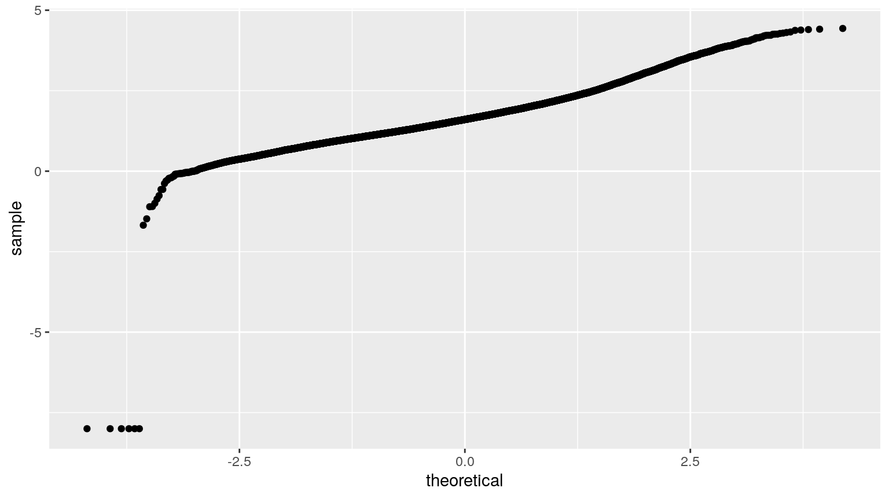
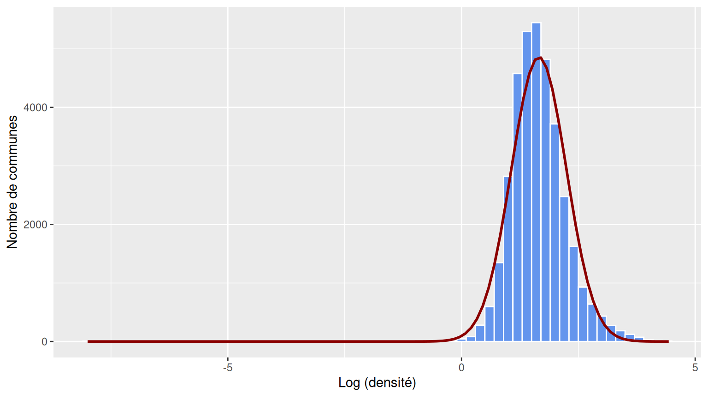
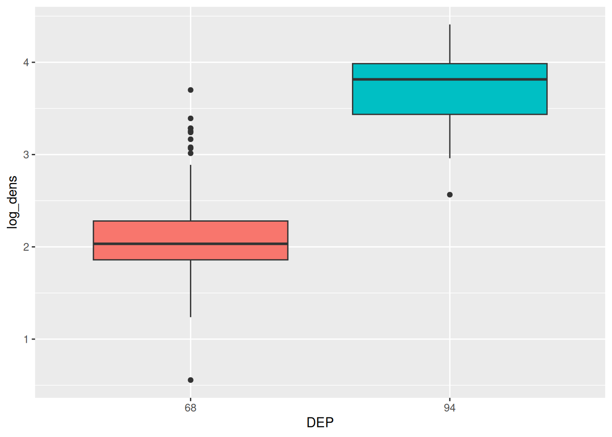
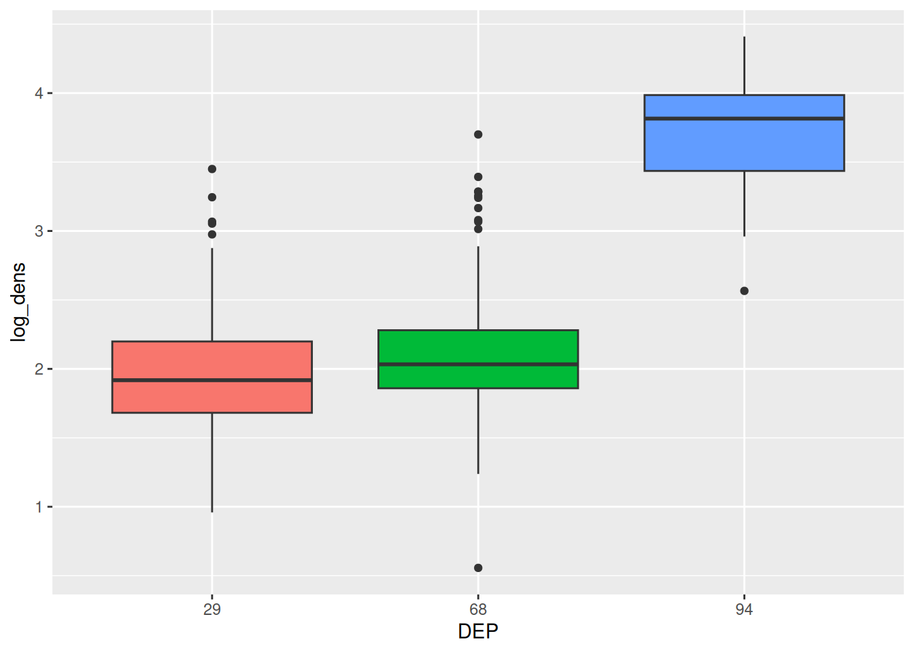
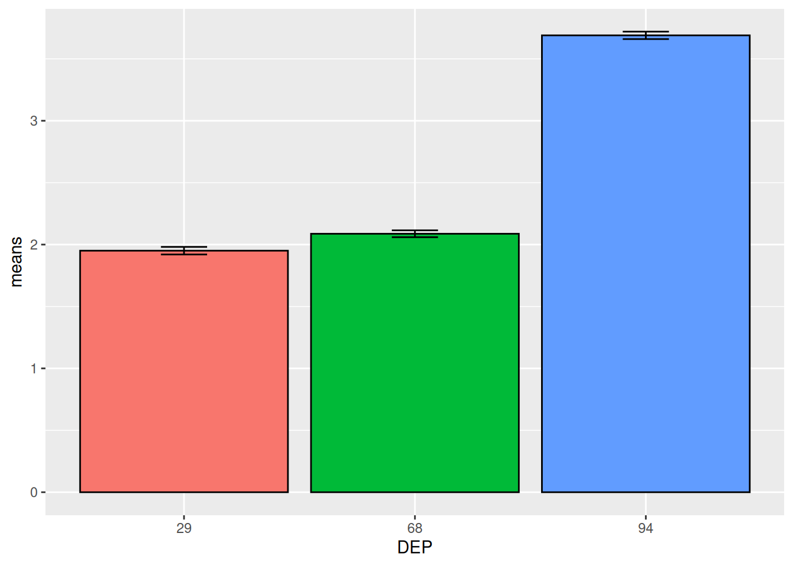
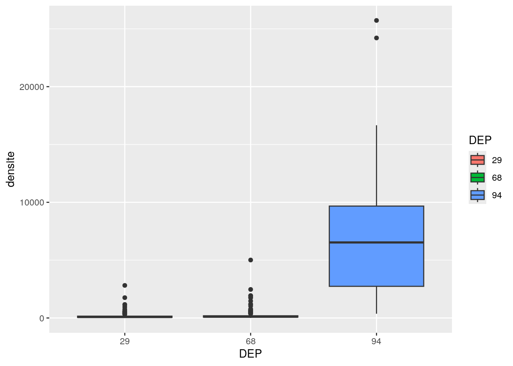

Chapitre 9 Tests
Les tests sortent du champ de la statistique descriptive “pure” pour entrer dans celui de la statistique inférentielle. L’inférence statistique consiste à induire les caractéristiques d’une population à partir de celles d’un échantillon de cette population.
9.1 Sur une variable quantitative
Plusieurs questions peuvent se poser à propos de la distribution d’une variable quantitative. La forme de la distribution (normale ou pas), ainsi que la tendance centrale peuvent être étudiées.
9.1.1 La distribution est-elle normale ?
Plusieurs approches sont envisageables pour se faire une idée de la réponse à cette question. La première est de visualiser graphiquement la distribution, et son “écart” à une loi normale.
Le diagramme quantile-quantile sert à comparer les quantiles de la variable à ceux d’une distribution attendue, par exemple la loi normale. La fonction stat_qq() permet d’afficher ce graphique.

Plus la courbe est rectiligne, plus cela signifie que les quantiles de la variable sont similaires à ceux de la distribution attendue.
On peut aussi apprécier la normalité en repartant de l’histogramme :
vec_logd <- pull (dat, log_dens)
n <- sum (!is.na (vec_logd)) # nombre d'éléments non-NA dans vec_logd
moy <- mean (vec_logd, na.rm = T)
ecart_t <- sd (vec_logd, na.rm = T)
n_binwidth <- 0.2
ggplot (dat, aes (x = log_dens)) +
geom_histogram (binwidth = n_binwidth,
colour = "white", fill = "cornflowerblue", size = 0.1) +
stat_function (fun = function(x) dnorm (x, mean = moy, sd = ecart_t) * n * n_binwidth,
color = "darkred", size = 1) +
xlab (label = "Log (densité)") +
ylab (label = "Nombre de communes")
stat_function() trace la fonction indiquée. Ici, on trace une loi normale (dnorm()) de même moyenne et écart-type que la variable dont on veut tester la normalité.
Après une visualisation, il est possible de “tester” l’affirmation. On se place dans l’hypothèse la plus simple (appelée hypothése nulle, ici : c’est que la distribution est bien normale), et on regarde si cela semble cohérent avec nos données.
Tests de normalité : Shapiro-Wilk, préconisé par Razali et al. 2011 Journal of Statistical Modeling and Analytics 2 (1): 21–33
##
## Shapiro-Wilk normality test
##
## data: .
## W = 0.98639, p-value < 2.2e-16p < 5% donc l’hypothèse de normalité est rejetée.
9.1.2 La moyenne diffère-t-elle de la valeur attendue ?
De la même manière, si on s’intéresse à la moyenne d’une distribution, on “teste” le fait qu’elle différe ou non d’une valeur fixe.
Le test de Student (fonction t.test()) pour échantillon unique permet de comparer la moyenne observée à une valeur de référence. Il est utilisable si et seulement si la distribution des valeurs dans l’échantillon est normale. Si ce n’est pas le cas, il faut utiliser le test de Wilcoxon (sur les rangs) avec la fonction wilcox.test().
Exemple : La densité (log-transformée) en Corse diffère-t-elle de la moyenne nationale ?
dens_corse <- dat %>% filter (REG == "94") %>% pull(log_dens)
dens_nat <- dat %>% pull(log_dens)
moy_dens_nat <- dens_nat %>% mean(na.rm = T) # la valeur de référence
shapiro.test (dens_corse) # non normal -> Wilcoxon##
## Shapiro-Wilk normality test
##
## data: dens_corse
## W = 0.96621, p-value = 2.124e-07##
## Wilcoxon signed rank test with continuity correction
##
## data: dens_corse
## V = 6180, p-value < 2.2e-16
## alternative hypothesis: true location is not equal to 1.655789##
## One Sample t-test
##
## data: dens_corse
## t = -18.247, df = 359, p-value < 2.2e-16
## alternative hypothesis: true mean is not equal to 1.655789
## 95 percent confidence interval:
## 1.086866 1.197566
## sample estimates:
## mean of x
## 1.142216La moyenne observée en Corse est de 1.14, contre 1.66 au niveau national. Cette différence est significative (p-value << 5%).
9.2 Sur une variable qualitative
On travaille cette fois sur une variable qualitative. On peut s’interroger sur la répartition des observations.
9.2.1 La distribution des observations diffère-t-elle de celle attendue ?
Par exemple sur dans un échantillon de personnes, on veut savoir si le sex-ratio est significativement différent de celui de la population française dans son ensemble, soit 51.4%, ou bien si au contraire le pourcentage observé est dans l’intervalle d’incertitude compte tenu de la taille de l’échantillon.
femmes <- 601
hommes <- 514
observed_n <- c(femmes, hommes) # Observation
expected_p <- c(0.514, 1-0.514) # Proportions attenduesIci l’échantillon est contitué de 601 femmes et 514 hommes donc un total de 1115 personnes.
expected_n <- round (expected_p * (femmes + hommes))
tab <- cbind (Sexe = c('Femmes', 'Hommes'), `Observé` = observed_n, Attendu = expected_n) %>%
as.data.frame () %>%
datatable ()
tabEn appliquant le pourcentage théorique, on s’attendrait à ce que ces 1115 personnes soient réparties en 573 femmes et 542 hommes.
Question : Est-ce que les proportions observées peuvent être dues au hasard, ou bien notre échantillon est-il différent de la population ?
On va tester au moyen du test du \(\chi^2\) pour échantillon unique. Ce test s’appelle grâce à la fonction chisq.test().
L’hypothèse nulle est que l’échantillon provient de la population générale.
##
## Chi-squared test for given probabilities
##
## data: observed_n
## X-squared = 2.7927, df = 1, p-value = 0.0947Les proportions observées sont dans l’intervalle d’incertitude pour un échantillon de 1115 personnes (p = 0.095> 5%). L’hypothèse nulle ne peut donc pas être rejetée au risque de 5%.
9.3 Sur 2 variables qualitatives
On étudie désormais 2 variables qualitatives.
9.3.1 Les deux variables qualitatives sont-elles indépendantes l’une de l’autre ?
Pour mesurer le lien entre 2 variables qualitatives, on peut se servir du \(\chi^2\) : - Le \(\chi^2\) de Pearson constitue la base de toute mesure de liaison entre des variables qualitatives \(\chi^2 = \sum_{i,j} \frac{(N_{ij}-N_{ij}^{*})^2}{N_{ij}^{*}} \hookrightarrow \chi_{(k-1)(r-1)}^2\) où \(N_{ij}^{*}=\frac{N_{i.} \cdot N_{.j}}{N}\) - Il mesure l’écart par rapport à la situation d’indépendance : plus le \(\chi^2\) est élevé, plus les variables sont liées (elles ne sont pas indépendantes) - La comparaison de la valeur avec le fractile d’ordre \(1-\alpha\) d’une loi \(\chi_{(k-1)(r-1)}^2\) permet de connaître la significativité du lien - On le réalise sur le tableau de contingence des effectifs - Il faut un effectif > 5 dans chaque case
Cette vidéo explique bien, étape par étape, ce que représente le test du \(\chi^2\)
## Warning in chisq.test(tab): Chi-squared approximation may be incorrect##
## Pearson's Chi-squared test
##
## data: tab
## X-squared = 6100.4, df = 128, p-value < 2.2e-16La p-value est inférieure à 5%, on a donc une probabilité très faible de nous tromper en rejetant l’hypothèse d’indépendance. Donc on rejette l’indépendance, c’est à dire qu’on peut considérer que les variables sont liées.
Cependant, on a des effectifs nuls : il faut donc regrouper des modalités pour satisfaire aux conditions d’utilisation du test. Ici on écarte aussi les outre-mer (codes 01 à 04) qui ont des effectifs faibles.
dat_ss_om <- dat %>%
filter (!REG %in% c('01', '02', '03', '04')) %>%
droplevels () %>%
mutate (ZAU3 = fct_recode (ZAU2, urbain = "111 - Grand pôle",
urbain = "211 - Moyen pôle",
urbain = "221 - Petit pôle",
"periurbain ou rural" = "112 - Couronne GP",
"periurbain ou rural" = "212 - Couronne MP",
"periurbain ou rural" = "120 - Multipol grandes AU",
"periurbain ou rural" = "300 - Autre multipol.",
"periurbain ou rural" = "222 - Couronne PP",
"periurbain ou rural" = "400 - Commune isolée"))## Warning: There was 1 warning in `mutate()`.
## ℹ In argument: `ZAU3 = fct_recode(...)`.
## Caused by warning:
## ! Unknown levels in `f`: 111 - Grand pôle, 211 - Moyen pôle, 221 - Petit pôle, 112 - Couronne GP, 212 - Couronne MP, 120 - Multipol grandes AU, 300 - Autre multipol., 222 - Couronne PP, 400 - Commune isolée## [1] "111 - Grand pôle (plus de 10 000 emplois)"
## [2] "112 - Couronne d'un grand pôle"
## [3] "120 - Multipolarisée des grandes aires urbaines"
## [4] "211 - Moyen pôle (5 000 à 10 000 emplois)"
## [5] "212 - Couronne d'un moyen pôle"
## [6] "221 - Petit pôle (de 1 500 à 5 000 emplois)"
## [7] "222 - Couronne d'un petit pôle"
## [8] "300 - Autre commune multipolarisée"
## [9] "400 - Commune isolée hors influence des pôles"## Warning in chisq.test(tab): Chi-squared approximation may be incorrect##
## Pearson's Chi-squared test
##
## data: tab
## X-squared = 5855.2, df = 96, p-value < 2.2e-169.3.2 Un couple de variables qualitatives est-il “lié plus fortement” qu’un autre couple ?
- La statistique du \(\chi^2\) dépend du nombre d’observations n et du nombre de modalités des variables. On ne peut donc pas comparer la force du lien entre plusieurs couples de variables
- Le V de Cramer quantifie l’intensité du lien entre deux variables qualitatives
- \(V = \sqrt{\frac{\frac{\chi^2}{n}}{min(k-1,r-1)}} \in [0;1]\)
- Analogie avec le coefficient de corrélation
## Warning in stats::chisq.test(...): Chi-squared approximation may be incorrect## [1] 0.1414565On peut comparer cette grandeur pour plusieurs couples de variables qualitatives.
9.4 Sur un croisement quantitatif/qualitatif
On cherche à comparer les moyennes d’une variable de deux groupes indépendants. La variable à comparer est quantitative, les deux (ou plus) groupes peuvent être vus comme issus d’une variable quantitative. Par exemple, on peut s’intéresser à la comparaison de la densité (variable quantitative) selon le département (variable qualitative).
9.4.1 2 échantillons indépendants
On ne regarde que 2 départements pour le moment.
Exemple : On veut comparer la densité (log-transformée) des communes du Haut Rhin (68) et de celles du Val de Marne (94). Ce sont deux groupes indépendants (les communes du Haut Rhin ne sont pas liées à celles du Val de Marne).
9.4.1.1 Distribution normale
Si les deux groupes à observer sont normalement distribués, on se servira du test de Student (t.test() sur R).
# travail préalable : on peut visualiser les données
data_test <- dat %>% filter(DEP %in% c(94, 68)) %>%
select(CODGEO, log_dens, densite, DEP)
ggplot(data = data_test, aes(x = DEP, y = log_dens, fill = DEP)) +
geom_boxplot() + theme (legend.position = "none")## Warning: Removed 11 rows containing non-finite outside the scale range
## (`stat_boxplot()`).
##
## Two Sample t-test
##
## data: log_dens by DEP
## t = -27.271, df = 411, p-value < 2.2e-16
## alternative hypothesis: true difference in means between group 68 and group 94 is not equal to 0
## 95 percent confidence interval:
## -1.717797 -1.486801
## sample estimates:
## mean in group 68 mean in group 94
## 2.087342 3.689640La p-value est inférieure à 0.05. La moyenne de la log-densité dans le Val de Marne est significativement différente que celle dans le Haut Rhin.
9.4.1.2 Distribution non normale
Dans le cas où les distributions des groupes ne sont pas normales, on se servira du test de Wilcoxon (wilcox.test() sur R). Le test de Wilcoxon se base sur les rangs des valeurs des observations des deux groupes, ce qui permet de s’affranchir de l’hypothése de normalité.
Si on regarde directement la densité :
##
## Wilcoxon rank sum test with continuity correction
##
## data: densite by DEP
## W = 111, p-value < 2.2e-16
## alternative hypothesis: true location shift is not equal to 0La p-value est inférieure à 0.05. Les moyennes sont donc significativement différentes entre les deux départements.
9.4.2 2 échantillons dépendants
Cette fois, on cherche à comparer les moyennes entre deux groupes dépendants. On a alors 2 variables par observations. Par exemple, on veut comparer la population moyenne en 2014 par rapport à celle en 2009. Pour chaque commune, on dispose de la population en 2009 et 2014.
On se servira des mêmes tests que ceux vus précedemment, et on précisera l’argument paired = TRUE.
9.4.2.1 Distribution normale
Si les distributions sont normales, on se servira du test de Student
# travail préalable : on peut visualiser les données
data_test_d <- dat %>% filter(DEP == 94) %>%
select(CODGEO, P14_POP, P09_POP) %>%
gather(key = annee, value = population, -CODGEO) %>%
mutate(log_pop = log(population),
annee = ifelse(annee == "P14_POP", "2014", "2009")) %>%
arrange(desc(annee), CODGEO)
g <- ggplot(data = data_test_d, aes(x = annee, y = log_pop, color = CODGEO)) +
geom_line(aes(group = CODGEO)) + geom_point() +
theme (legend.position = "none")
ggplotly(g) # ajout de dynamisme # on repasse au format large
data_test_d2 <- data_test_d %>%
pivot_wider(names_from = "annee", values_from = c("log_pop", "population"))
res <- t.test(data_test_d2$log_pop_2009, data_test_d2$log_pop_2014, paired = TRUE)
res##
## Paired t-test
##
## data: data_test_d2$log_pop_2009 and data_test_d2$log_pop_2014
## t = -4.6323, df = 46, p-value = 2.985e-05
## alternative hypothesis: true mean difference is not equal to 0
## 95 percent confidence interval:
## -0.04960983 -0.01955511
## sample estimates:
## mean difference
## -0.034582479.4.2.2 Distribution non normale
Si les distributions ne sont pas normales, on se servira du test de Wilcoxon
# travail préalable : on peut visualiser les données
g <- ggplot(data = data_test_d, aes(x = annee, y = population, color = CODGEO)) +
geom_line(aes(group = CODGEO)) + geom_point() +
theme (legend.position = "none")
ggplotly(g)##
## Wilcoxon signed rank exact test
##
## data: data_test_d2$log_pop_2009 and data_test_d2$log_pop_2014
## V = 144, p-value = 1.982e-06
## alternative hypothesis: true location shift is not equal to 0La p-value est inférieure à 0.05. La moyenne des populations est significativement différente d’une année sur l’autre.
9.4.3 Plusieurs échantillons indépendants
Si on cherche à comparer plus de 2 groupes, on doit se servir d’autres tests que ceux vus précedemment. De la même manière, on dispose d’un test qui fonctionne avec hypothése de normalité, et un qui permettra de s’affranchir de cette contrainte.
9.4.3.1 Echantillons normalement distribués (ANOVA)
Dans le cas où les données suivent une distribution normale, on se servira alors de l’ANOVA (Analysis of Variance). La fonction permettant d’effectuer une ANOVA sur R est aov(). Si on veut comparer la densité dans 3 départements différents, on fera :
# travail préalable : on peut visualiser les données
data_test_m <- dat %>% filter(DEP %in% c(94, 68, 29)) %>%
select(CODGEO, densite, log_dens, DEP)
ggplot(data = data_test_m, aes(x = DEP, y = log_dens, fill = DEP)) +
geom_boxplot() + theme (legend.position = "none")## Warning: Removed 13 rows containing non-finite outside the scale range
## (`stat_boxplot()`).
## Df Sum Sq Mean Sq F value Pr(>F)
## DEP 2 124.0 61.98 399.1 <2e-16 ***
## Residuals 691 107.3 0.16
## ---
## Signif. codes: 0 '***' 0.001 '**' 0.01 '*' 0.05 '.' 0.1 ' ' 1
## 13 observations deleted due to missingnessLa p-value est inférieure à 0.05 : il y a bien une différence significative entre les groupes. Pour complèter l’analyse, il faudrait ensuite repartir sur les tests entre deux échantillons. Pour connaître les groupes deux à deux distincts, on peut aussi se servir de la fonction TukeyHSD(), qui calcule les comparaisons entre les groupes.
## Tukey multiple comparisons of means
## 95% family-wise confidence level
##
## Fit: aov(formula = log_dens ~ DEP, data = data_test_m)
##
## $DEP
## diff lwr upr p adj
## 68-29 0.136662 0.06324928 0.2100747 4.21e-05
## 94-29 1.738961 1.59309691 1.8848246 0.00e+00
## 94-68 1.602299 1.45888251 1.7457150 0.00e+00Les p-value étant toutes inférieures à 0.05, la différence est donc significative entre chaque groupes pris deux à deux.
Une autre représentation graphique utilisée pour une ANOVA est le graphique errorbar.
n <- nrow(data_test_m)
# creation des données pour chaque DEP
graph <- data_test_m %>% group_by(DEP) %>%
summarise(sd = sd(log_dens, na.rm = T),
means = mean(log_dens, na.rm = T)) %>%
mutate(se = 1.96 * sd / sqrt(n))
ggplot(graph, aes(x = DEP, y = means, fill = DEP)) +
geom_bar(stat="identity", color="black",
position = position_dodge()) +
geom_errorbar(aes(ymin = means - se, ymax = means + se),
width = 0.2) +
theme (legend.position = "none")
9.4.3.2 Echantillons non normalement distribués (Kruskal-Wallis)
Si les distributions ne sont pas normales, on se servira du test de Kruskal-Wallis. Il généralise le test de Wilcoxon sur plus de deux groupes. Il fonctionne de manière similaire, en comparant les rangs des valeurs des différents groupes.
# travail préalable : on peut visualiser les données
ggplot(data = data_test_m, aes(x = DEP, y = densite, fill = DEP)) + geom_boxplot()## Warning: Removed 13 rows containing non-finite outside the scale range
## (`stat_boxplot()`).
##
## Kruskal-Wallis rank sum test
##
## data: densite by DEP
## Kruskal-Wallis chi-squared = 145.34, df = 2, p-value < 2.2e-16La p-value est inférieure à 0.05 : il y a bien une différence significative entre les groupes. Pour complèter l’analyse, il faudrait ensuite repartir sur les tests entre deux échantillons. Pour connaître les groupes deux à deux distincts, on peut aussi se servir de la fonction pariwise.wilcox.test, qui calcule les comparaisons entre les groupes.
##
## Pairwise comparisons using Wilcoxon rank sum test with continuity correction
##
## data: data_test_m$densite and data_test_m$DEP
##
## 29 68
## 68 1.2e-05 -
## 94 < 2e-16 < 2e-16
##
## P value adjustment method: BHIci, tous les départements sont significativement différents deux à deux, car les p-values sont toutes inférieures à 0,05.